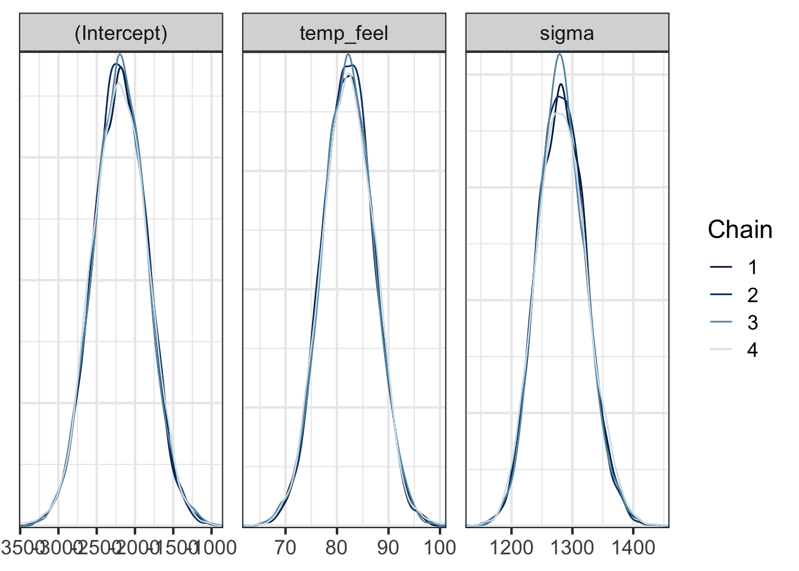

29 Bayesian Linear Regression*
\[ \def\cD{{\cal D}} \def\cL{{\cal L}} \def\cX{{\cal X}} \def\cF{{\cal F}} \def\cH{{\cal H}} \def\bA{\mathbf{A}} \def\bB{\mathbf{B}} \def\bX{\mathbf{X}} \def\bH{\mathbf{H}} \def\bI{\mathbf{I}} \def\bU{\mathbf{U}} \def\bD{\mathbf{D}} \def\bV{\mathbf{V}} \def\bS{\mathbf{S}} \def\bW{\mathbf{W}} \def\bY{\mathbf{Y}} \def\bZ{\mathbf{Z}} \def\bK{\mathbf{K}} \def\bx{\mathbf{x}} \def\by{\mathbf{y}} \def\bs{\mathbf{s}} \def\br{\mathbf{r}} \def\bu{\mathbf{u}} \def\be{\mathbf{e}} \def\bv{\mathbf{v}} \def\bp{\mathbf{p}} \def\bw{\mathbf{w}} \def\bz{\mathbf{z}} \def\bzero{\mathbf{0}} \def\balpha{\boldsymbol \alpha} \def\bbeta{\boldsymbol \beta} \def\btheta{\boldsymbol \theta} \def\bSigma{\boldsymbol \Sigma} \def\bxi{\boldsymbol \xi} \def\bmu{\boldsymbol \mu} \def\bep{\boldsymbol \epsilon} \def\T{\text{T}} \def\Trace{\text{Trace}} \def\Cov{\text{Cov}} \def\cov{\text{Cov}} \def\Corr{\text{Corr}} \def\cor{\text{Corr}} \def\Var{\text{Var}} \def\var{\text{Var}} \def\E{\text{E}} \def\pr{\text{pr}} \def\Prob{\text{P}} \DeclareMathOperator*{\argmin}{arg\,min} \DeclareMathOperator*{\argmax}{arg\,max} \]
We learned the basic Bayesian inference in Chapter 21. In this chapter, we apply the Bayesian rule to the linear regression model, and do the Bayesian inference about the unknown regression coefficients. We will also learn how to update our knowledge or do the prediction with the Bayes rule.
We will use several R packages to facilitate Bayesian computation, without the need to worry the mathematical and computational details. Some useful packages for Bayesian modeling and analysis are listed below.
29.1 Bayesian Simple Linear Regression Model
In simple linear regression, we have
\[Y_i \mid \beta_0, \beta_1, \sigma \stackrel{ind}{\sim} N\left(\mu_i, \sigma^2 \right) \quad \text{with} \quad \mu_i = \beta_0 + \beta_1 X_i\]
We assume or thought the response values are generated from the normal distribution whose mean depends on their corresponding regressor’s value. In Bayesian inference, this normal data model is our likelihood \(L(\btheta = (\beta_0, \beta_1, \sigma) \mid \mathcal{D} = \{\by, \bx \})\), as it evaluates how the data are compatible with different possible values of parameters.
Here, in SLR, we have three unknown parameters \(\beta_0, \beta_1, \sigma\) to be estimated, and we use \(\btheta\) to denote a unknown parameter vector including the three. \(\mathcal{D}\) is the collected data set including both response \(\by\) vector and regressor \(\bx\) vector.
To be a Bayesian, what do we do next? Bayesians only have one trick. We assign priors to the unknown parameters, then do the posterior inference using Bayes’ rule! The idea is simple, but the big question is HOW. There are countless approaches to construct priors for \(\beta_0, \beta_1\), and \(\sigma\). For simplicity, we can assume \(\beta_0, \beta_1\), and \(\sigma\) are independent. That is, their joint probability distribution is the product of their own marginal distribution: \(\pi(\btheta) = \pi(\beta_0, \beta_1, \sigma) = \pi(\beta_0)\pi(\beta_1)\pi(\sigma)\).
The next question is what are \(\pi(\beta_0)\), \(\pi(\beta_1)\), and \(\pi(\sigma)\)? \(\beta_0\) and \(\beta_1\) can technically take any values in the real line. We can embrace the normal distribution because its support is the whole real line, and it is actually a conjugate prior for the SLR with normally distributed errors. Let’s assume
\[\begin{align} \beta_0 \sim N(m_0, s_0^2), \\ \beta_1 \sim N(m_1, s_1^2). \end{align}\]
Here \(m_0\) and \(m_1\) are prior means, and \(s_0^2\) and \(s_1^2\) are prior variances. Before new data or evidence come in, we think \(\beta_0\) and \(\beta_1\) are sort of located at \(m_0\) and \(m_1\), respectively. Of course we are not 100% sure or correct. \(s_0^2\) and \(s_1^2\) measure how uncertain we feel about the location of \(\beta_0\) and \(\beta_1\).
By definition, \(\sigma\) must be positive practically. Therefore, a distribution having a positive support is more appropriate to reflect the possible values of \(\sigma\). One popular distribution used to describe \(\sigma\) is the exponential distribution denoted as
\[\begin{align} \sigma \sim \text{Exp}(\lambda) \end{align}\] whose density function is \(\pi(\sigma) = \lambda e^{-\lambda \sigma}\) with \(\lambda > 0\). The mean and variance are \(\E(\sigma) = 1/\lambda\), and \(\Var(\sigma) = 1/\lambda^2\). The parameter \(\lambda\) controls the size of mean and variance. The larger \(\lambda\) is, the smaller mean and variance will be
Once the prior distributions are specified, with the data likelihood model, the Bayesian simple linear regression model is complete.
\[\begin{align} Y_i \mid \beta_0, \beta_1, \sigma &\stackrel{ind}{\sim} N\left(\mu_i, \sigma^2 \right) \quad \text{with} \quad \mu_i = \beta_0 + \beta_1 X_i \\ \beta_0 &\sim N(m_0, s_0^2) \\ \beta_1 &\sim N(m_1, s_1^2) \\ \sigma &\sim \text{Exp}(\lambda) \end{align}\]
Note that in this model, we introduce other parameters, the parameters in the prior distributions, \(m_0\), \(s_0^2\), \(m_1\), \(s_1^2\), and \(\lambda\). Some call them hyperparameters. The posterior inference results will depend on those values, so before we compute the posterior distribution, we need to specify those values properly, so that the prior distributions faithfully convey our knowledge and belief about \(\beta_0\), \(\beta_1\), and \(\sigma\). The process of finding appropriate hyperparameters to faithfully describe and represents our knowledge is called prior parameter tuning. We explain how we tune the parameters using the following example.
Example: Capital Bikeshare bayesrules::bikes Data in Washington, D.C.
The data we use for illustration is bayesrules::bikes data set. In particular, we check the relationship between the number of bikeshare rides rides and what the temperature feels like (degrees Fahrenheit) temp_feel.
Rows: 500
Columns: 2
$ rides <int> 654, 1229, 1454, 1518, 1362, 891, 1280, 1220, 1137, 1368, 13…
$ temp_feel <dbl> 64.7, 49.0, 51.1, 52.6, 50.8, 46.6, 45.6, 49.2, 46.4, 45.6, …29.1.1 Tuning Prior Models
Prior understanding 1:
- On an average temperature day, say 65 or 70 degrees, there are typically around 5000 riders, though this average could be somewhere between 3000 and 7000.
This piece of information gives us an idea of what \(m_0\) and \(s_0\) should be, but the information has been centered because it provides the typical situation.
We can consider the centered intercept, \(\beta_{0c}\) that reflects the typical ridership at the typical temperature. \(\beta_{0c}\) will be centered at the typical number of rides 5000, with standard deviation about 1000 because the mean \(\pm\) 2 \(\times\) SD \(= (3000, 7000)\). So the prior for the centered intercept is \(\beta_{0c} \sim N(5000, 1000^2)\). Graphically speaking, we believe when temperature is around 65 to 70 degrees, the number of rides is about 5000, and interaction of the two dashed lines in the figure.
Prior understanding 2:
- For every one degree increase in temperature, ridership typically increases by 100 rides, though this average increase could be as low as 20 or as high as 180.
This information tells us about \(\beta_1\). On average, the slope is 100, and its standard deviation is around 40 because the mean \(\pm\) 2 \(\times\) SD \(= (20, 180)\). Therefore we can have \(\beta_{1} \sim N(100, 40^2)\).
Graphically speaking, with the centered intercept, we now have the prior regression line, the relationship between rides and temp_feel that we believe it typically has. Note that the prior regression line passes the the centered intercept.
Note that this red line represents just the typical case we believe. There are other (in fact infinitely many) possibilities of \(\beta_{0c}\) and \(\beta_1\) being considered in our brain that are captured in the prior distributions. We can plot some possible combinations of \(\beta_{0c}\) and \(\beta_1\), and see the prior plausible model lines \(\mu_{Y|X} = \beta_0 + \beta_1 X\).
Prior understanding 3:
- At any given temperature, daily ridership will tend to vary with a moderate standard deviation of 1250 rides.
This information is about \(\sigma\). With \(\pi(\sigma) = \text{Exp}(\lambda)\). We can set \(\lambda\) so that the prior mean is 1250, as informed by the description.
\(\sigma \sim \text{Exp}(0.0008)\) because \(\E(\sigma) = 1/\lambda = 1/0.0008 = 1250\)
We basically complete the tuning, and all prior distributions are clearly specified. We can generate some prior data points, the data we believe it should look like if we were collecting them, based on the prior model. The following is the simulated prior data when the regression line comes from the prior mean level of \(\beta_{0c}\) and \(\beta_1\).
29.2 Posterior Inference
29.2.1 Posterior distribution and sampling
Once the Bayesian model is fully specified, we can start doing posterior inference by obtaining the posterior distribution of unknown parameters. We use Bayes rule to update our prior understanding of the relationship between ridership and temperature using data information provided by likelihood.
The joint posterior distribution is
\[\pi(\beta_0, \beta_1, \sigma \mid \by) = \frac{L(\beta_0, \beta_1, \sigma \mid \by)\pi(\beta_0, \beta_1, \sigma)}{p(\by)}\] where
\(L(\beta_0, \beta_1, \sigma \mid \by) = p(\by \mid \beta_0, \beta_1, \sigma) = \prod_{i=1}^np(y_i \mid \beta_0, \beta_1, \sigma)\). It means that given the parameters, and the data generating mechanism, data points \(y_i\)s are independent each other.
\(\pi(\beta_0, \beta_1, \sigma) = \pi(\beta_0)\pi(\beta_1)\pi(\sigma)\). Priors are assumed independent.
\(p(\by) = \int \int \int \left[\prod_{i=1}^np(y_i \mid \beta_0, \beta_1, \sigma)\right]\pi(\beta_0)\pi(\beta_1)\pi(\sigma) ~ d\beta_0d\beta_1d\sigma\). This is marginal likelihood that integrates all the parameters out. It is a function of data only. It works as a normalizing constant, guaranteeing that the posterior distribution \(\pi(\beta_0, \beta_1, \sigma \mid \by)\) is a valid probability distribution.
As you can see, \(p(\by)\) looks much more complicated than the one we learned in Chapter 21. When there are many parameters to be estimated, and their prior distributions are complex, it is difficult or impossible to obtain this integral by hand. That is why when doing Bayesian inference, we usually need to use some algorithms to help us derive the posterior distribution, either exactly or approximately.
There are lots of ways to generate/approximate the posterior distribution of parameters. They are discussed in Bayesian statistics course. The method used here is Markov chain Monte Carlo (MCMC). Briefly speaking, MCMC is an algorithm that repeatedly draws the samples of the parameters, and eventually the collection of those draws well represents the posterior distribution of parameters. Again, the details are discussed in a Bayesian analysis course.
Here we use the R rstanarm package that uses RStan syntax1 to do Bayesian inference for applied regression models (arm).
The function helping us draw posterior samples is stan_glm(). The formula is exactly the same as lm(). The family is gaussian because we have a normal data model. prior_intercept is for \(\beta_{0c}\), prior for \(\beta_1\) and prior_aux for \(\sigma\). Here, 4 Markov chains are generated. In other words, 4 distinct collection of posterior samples will be generated, each having 10000 draws or iterations. Each iteration draws a posterior sample of the \(\beta_0\), \(\beta_1\), and \(\sigma\).
bike_model <- rstanarm::stan_glm(rides ~ temp_feel, data = bikes,
family = gaussian(),
prior_intercept = normal(5000, 1000),
prior = normal(100, 40),
prior_aux = exponential(0.0008),
chains = 4, iter = 5000*2, seed = 2024)After tossing out the first half of Markov chain values from the warm-up or burn-in phase, stan_glm() simulation produces four parallel chains of length 5000 for each model parameter:
\(\{ \beta_0^{(1)}, \beta_0^{(2)}, \dots, \beta_0^{(5000)} \}\), \(\{ \beta_1^{(1)}, \beta_1^{(2)}, \dots, \beta_1^{(5000)} \}\), \(\{ \sigma^{(1)}, \sigma^{(2)}, \dots, \sigma^{(5000)} \}\)
29.2.2 Convergence diagnostics
When we use MCMC to do posterior inference, we need to make sure that the algorithm converges. In other words, the posterior samples drawn by the algorithm should reach a stable distribution, and the distribution basically won’t change much as samples are continuously collected. One way to check the convergence is to check the traceplot, seeing how the sample values move as the iteration goes. If the algorithm reaches the convergence, the traceplots from the 4 independent runs should be mixed and overlapped very well because the 4 set of samples should represent the same posterior distribution. The traceplots obtained from the model fit are mixed well.
# Trace plots of parallel chains
bayesplot::mcmc_trace(bike_model, size = 0.1)When MCMC just starts, the drawn samples are usually not representative of the posterior distribution. Because of this, we usually don’t include the samples drawn in the early iterations in the final collection of samples used for representing the posterior distribution and for analysis. The following two animations show that it takes a while and several iterations to reach a more stable distribution.


The density curves estimated from the posterior samples approximate posterior distributions. We observe that these four chains produce nearly indistinguishable posterior approximations. This provides evidence that our simulation is stable and sufficiently long – running the chains for more iterations likely wouldn’t produce drastically different or improved posterior approximations.
# Density plots of parallel chains
bayesplot::mcmc_dens_overlay(bike_model)
In addition to visualization, we can use some numeric measures to diagnose convergence. Both effective sample size and R-hat are close to 1, indicating that the chains are stable, mixing quickly, and behaving much like an independent sample.
# Effective sample size ratio
bayesplot::neff_ratio(bike_model)(Intercept) temp_feel sigma
1.023 1.021 0.996 # Rhat
bayesplot::rhat(bike_model)(Intercept) temp_feel sigma
1 1 1 There’s no magic rule for interpreting this ratio, and it should be utilized alongside other diagnostics such as the trace plot. That said, we might be suspicious of a Markov chain for which the effective sample size ratio is less than 0.1, i.e., the effective sample size is less than 10% of the actual sample size. An R-hat ratio greater than 1.05 raises some red flags about the stability of the simulation.
The followings provide two scenarios that MCMC hasn’t reached convergence.
-
Highly Autocorrelated Chain: Effective size is small, not many independent samples that are representative of the true posterior distribution.
- Run longer and thinning the chain
-
Slow Convergence: Need wait longer to have the chain reached a stable mixing zone that are representative of the true posterior distribution.
- Set a longer burn-in or warm-up period
29.2.3 Posterior summary and analysis
Once posterior samples are collected, we can calculate important summary statistics, for example posterior mean, and the 80% credible interval. The two are shown in the first column and the last two columns in the table below.
# Posterior summary statistics
tidy(bike_model, effects = c("fixed", "aux"),
conf.int = TRUE, conf.level = 0.80)# A tibble: 4 × 5
term estimate std.error conf.low conf.high
<chr> <dbl> <dbl> <dbl> <dbl>
1 (Intercept) -2194. 355. -2648. -1747.
2 temp_feel 82.2 5.08 75.7 88.7
3 sigma 1282. 40.6 1231. 1335.
4 mean_PPD 3485. 80.7 3384. 3591. The posterior relationship (on average) is \(-2196 + 82.2 X\). Note that before data come in, we believe one degree increase will increase 100 rides on average. However, data tell us the effect of temperature is not as large as we thought. We can directly quantify the uncertainty about \(\beta_1\) by looking at its credible interval. The 80% credible interval for \(\beta_1\) is \((75.7, 88.5)\). The interval is much more intuitive than the confidence interval. We say, given the data, the probability that \(\beta_1\) is between 75.7 and 88.5 is 80%., i.e., \(P(\beta_1 \in(75.7, 88.5) \mid \by, \bx) = 80\%\).
The posterior samples are saved in bike_model_df.
# Store the 4 chains for each parameter in 1 data frame
bike_model_df <- as.data.frame(bike_model)
nrow(bike_model_df)[1] 20000head(bike_model_df) (Intercept) temp_feel sigma
1 -1993 77.7 1289
2 -1818 75.9 1292
3 -2003 78.3 1305
4 -2515 87.4 1250
5 -2519 88.0 1293
6 -1666 74.5 1294How do we learn whether or not \(\beta_1 > 0\) is zero without using the frequentist hypothesis testing approach? Since we have the posterior samples, we have (at least well approximated) the entire posterior distribution. As a result, we can sort of quantify the probability \(P(\beta_1 > 0 \mid \by, \bx)\). How? We just need to calculate the relative frequency of \(\beta_1\) that is greater than 0.
\[P(\beta_1 > 0 \mid \by, \bx) \approx \frac{1}{20000}\sum_{t=1}^{20000} \mathbf{1}\left(\beta_1^{(t)} > 0\right)\]
Instead of making a dichotomous judgement, in the Bayesian world, we provide the probability of something happening. Anything is not just black or white. We live in a world full of different gray, a continuum showing the degree of our credence. In our example, the probability that \(\beta_1 > 0\) is basically one. We are pretty certain that temperature has a positive effect on the number of bikeshare rides.
The figure below shows 100 posterior regression lines, one corresponding to one pair of \((\beta_0^{(t)}, \beta_1^{(t)})\).
For each posterior draw \(\{\beta_0^{(t)}, \beta_1^{(t)}, \sigma^{(t)} \}_{t = 1}^{20000}\), we have the posterior predictive distribution \[Y_i^{(t)} \sim N\left(\beta_0^{(t)} + \beta_1^{(t)}X_i, \, (\sigma^{(t)})^2\right)\]
We then can have 20000 different posterior predictive response distributions, and 20000 different posterior predictive response data sets. Those data are what we think the data will look like if the true data generating mechanism is one of the regression model with parameters \(\{\beta_0^{(t)}, \beta_1^{(t)}, \sigma^{(t)} \}\).